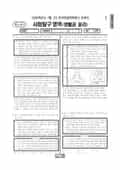

문제지

전국연합학력평가 · 시·도교육청 주관
2026년 7월 고3 학력평가 사회탐구 생활과윤리 1등급컷은 원점수 47점(추정), 표준점수 최고점은 73점입니다.
원점수 1등급컷은 공식 발표값이 아니라 EBSi·입시기관 값입니다. 등급별 값은 등급컷 표, 출처 구분은 데이터 원칙에 있습니다.

시험지를 먼저 풀어 보세요. 등급컷·표준점수·난이도는 흐리게 가려 뒀어요.
| 등급 | 원점수 | 표준점수 | 백분위 |
|---|---|---|---|
| 1 | 47 | 70 | 96 |
| 2 | 41 | 65 | 89 |
| 3 | 32 | 58 | 76 |
| 4 | 25 | 52 | 61 |
| 5 | 17 | 45 | 39 |
| 6 | 13 | 42 | 26 |
| 7 | 10 | 39 | 10 |
| 8 | 6 | 36 | 3 |
등급별 컷 · 입시기관 2곳 원점수 추정 종합(EBSi·대성마이맥) · 만점 50점
| 등급 | 표준점수 이상 | 인원(명) | 비율 |
|---|---|---|---|
| 1 | 70 | 6,111 | 4.29% |
| 2 | 65 | 9,829 | 6.91% |
| 3 | 58 | 19,930 | 14.01% |
| 4 | 52 | 21,266 | 14.94% |
| 5 | 45 | 31,242 | 21.96% |
| 6 | 42 | 22,047 | 15.49% |
| 7 | 39 | 19,413 | 13.64% |
| 8 | 36 | 9,724 | 6.83% |
| 9 | 31 | 2,736 | 1.92% |
시·도교육청 공개 자료
출처: 시·도교육청이 공개한 전국연합학력평가 성적 분석·통계자료(공개 자료 보기).
EBSi 응답자 기준으로 가장 많이 틀린 문항은 16번(3점)이고, 오답률은 61.1%입니다. 오답률 50%를 넘은 문항은 5개입니다.
| 순위 | 문항 | 배점 | 오답률 | 정답 | 많이 고른 오답 |
|---|---|---|---|---|---|
| 1 | 16번 | 3점 | 61.1% | ② | ③ 21% |
| 2 | 9번 | 2점 | 60.5% | ⑤ | ② 28% |
| 3 | 10번 | 3점 | 58.7% | ③ | ④ 26.6% |
| 4 | 13번 | 3점 | 57.2% | ② | ⑤ 41.1% |
| 5 | 4번 | 3점 | 51.3% | ④ | ⑤ 19.5% |
| 6 | 19번 | 3점 | 47.4% | ① | ④ 15.1% |
| 7 | 12번 | 2점 | 46.9% | ① | ② 16% |
| 8 | 6번 | 3점 | 46.5% | ④ | ② 13% |
| 9 | 18번 | 3점 | 46.2% | ③ | ① 34.6% |
| 10 | 14번 | 3점 | 43.4% | ⑤ | ③ 15.5% |
| 11 | 3번 | 3점 | 39.2% | ① | ④ 13% |
| 12 | 11번 | 3점 | 32% | ④ | ③ 10% |
| 13 | 5번 | 2점 | 30.5% | ④ | ⑤ 17.6% |
| 14 | 1번 | 2점 | 27.2% | ③ | ① 11.7% |
| 15 | 8번 | 2점 | 21.8% | ④ | ③ 7.4% |
EBSi 가채점 응답자 기준 · 전 문항 중 오답률 상위 15문항
출처: EBSi 역대 등급컷·오답률 공개 화면. 가채점에 참여한 EBSi 이용자 응답이라 전체 응시자 정답률과는 다를 수 있습니다.
발행 기관: 시·도교육청(전국연합학력평가). 파일 위치: 이 사이트가 보관한 사본. 저작권은 발행 기관에 있습니다. 원본과 다르거나 게시 중단이 필요하면 연락처로 알려 주세요. 등급컷 출처 구분은 데이터 원칙에서 설명합니다.
막대 색은 역대 대비 난이도 · 진한 막대가 이 시험 · 막대를 누르면 그 회차로 이동
| 회차 | 1등급컷 | 표점 최고 | 1등급 표점 | 난이도 |
|---|---|---|---|---|
| 7월 학평2026년 고3이 시험 | 47 | 73 | 70 | 어려움 |
| 5월 학평2026년 고3 | 45 | 71 | 67 | 쉬움 |
| 3월 학평2026년 고3 | 44 | 76 | 70 | 매우 어려움 |
| 10월 학평2025년 고3 | 50 | 64 | 64 | 매우 쉬움 |
| 7월 학평2025년 고3 | 45 | 74 | 69 | 어려움 |
| 3월 학평2025년 고3 | 42 | 76 | 69 | 어려움 |
| 10월 학평2024년 고3 | 47 | 69 | 67 | 보통 |
| 7월 학평2024년 고3 | 44 | 74 | 69 | 어려움 |
| 3월 학평2024년 고3 | 39 | 80 | 69 | 매우 어려움 |
| 10월 학평2023년 고3 | 47 | 70 | 67 | 쉬움 |
생활과 윤리는 응시자 142,298명, 표준점수 최고점 73점, 1등급 구분 표준점수 70점이었습니다. 오답률 50%를 넘은 문항은 5개였습니다.
가장 많이 틀린 16번(3점, 61.1%)은 영구 평화를 위해 모든 국가의 정치 체제가 공화 정체여야 한다고 본 칸트 등 두 사상가의 평화론을 묻는 문항, 9번(2점, 60.5%)은 성스러운 것이 드러나는 경험을 강조한 엘리아데의 종교관을 묻는 문항이었습니다.
10번(3점, 58.7%)은 세 사상가의 입장을 그림으로 표현한 문항, 13번(3점, 57.2%)은 '자연은 인류를 고통과 쾌락의 지배 아래 두었다'고 한 벤담의 입장에서 조언을 고르는 문항으로 응답의 41.1%가 한 오답을 골랐습니다.
칸트의 영구 평화론, 벤담의 쾌락 계산처럼 원문 표현이 그대로 나오는 사상가는 핵심 구절과 결론을 짝지어 익혀 두는 것이 효과적입니다. 시험 전체 흐름은 이 회차의 회차 해설에 정리했습니다.